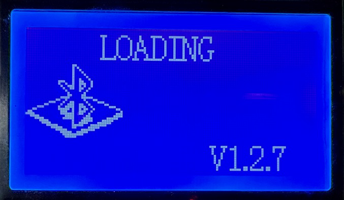
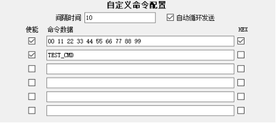
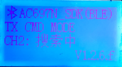

3.9. PC Passthrough Commands and Custom Commands
3.9.1. Using PC passthrough commands
3.9.1.1. Feature overview
This feature makes it easier to connect the test box to an MES system.
Supports reading the Bluetooth address of earphones connected over UART
Supports passthrough of custom commands
3.9.1.2. Operation
Test box PC tool settings
[1] Connect the test box to the PC and press and hold the rightmost button on the test box to enter PC configuration mode; the test box shows "LOADING";

[2] Open the PC tool and, under "Wired UART mode configuration" (有线串口模式配置), set "DUT command mode enable" (DUT命令模式使能) to 1.

Test box hardware setup
[1] DIP switch configuration: this mode does not depend on the DIP switch positions.
[2] Connect the UART port of the test box to the fixture; see "Connecting the Test Box to a Fixture over UART".
Procedure
[1] Press and hold the rightmost button on the test box to enter PC mode
[2] On the PC, open the PC tool from the command line. To get the available parameters, run bluetooth_test_box.exe –console -h.
[3] When testing is complete, put the earphones into a normal charging case to restore normal mode
3.9.2. Using custom UART commands in UART mode
Custom UART command configuration in DUT command mode

When DUT command mode is enabled and the "UART command configuration" (串口命令配置) is empty, the test box sends the original CMD_BOX_ENTER_DUT(0x04) command. By default, the SDK responds to this command by entering the DUT test state and waiting for a connection.
If the UART command configuration contains custom content (up to 31 bytes of hexadecimal values), the test box sends a command starting with CMD_BOX_CUSTOM_CODE(0xF0); for example, if you enter 00, the test box sends the command F0 00, which the SDK by default handles by entering quick self-test mode. You can change the content of the command configuration and add a response to the command in the SDK to implement specific functions.
Note
DUT command mode is mutually exclusive with upgrade, pairing and testing in UART mode; they cannot be used at the same time.
3.9.3. Using custom command send mode
V1.2.6.f added the custom command send mode configuration option (
this option requires SDK support)

In BLE slave test mode (DIP switch 1 OFF, DIP switch 6 ON), this mode sends a sequence of custom commands to the device under test at a specified interval, so that the device under test can be switched between different working states for automated testing.


2. Usage
When "Custom command send mode" (自定义命令发送模式) is set to 1, custom command content can be configured in the "Custom command configuration" (自定义命令配置) area.
When "Custom command send mode" (自定义命令发送模式) is set to 0, the "Custom command configuration" (自定义命令配置) area cannot be edited.
In the "Custom command configuration" (自定义命令配置) area, the interval can be set from 1 to 255, in units of 100ms; for example, a setting of 10 sends one command every second.
In the "Custom command configuration" (自定义命令配置) area, if "Auto loop send" (自动循环发送) is checked ("√"), all enabled commands are sent repeatedly in a loop; if it is not checked, they are sent only once.
In the "Custom command configuration" (自定义命令配置) area, command data can be entered in hexadecimal or character form, selected with the "HEX" checkbox after each command. The enable box in front of the command data must be checked ("√") for the command to be used when sending; if it is not checked, the command is only stored in the test box and is not sent.
After configuring the settings above, click "Save settings to test box" (保存设置到测试盒). After the settings are saved successfully, reset the test box for this configuration to take effect.
Once a BLE connection with the device under test is established, press the control button of the corresponding channel on the test box (the left button for CH1, the middle button for CH2) to enter or exit "Custom command send mode" (自定义命令发送模式). In custom command send mode, the test box displays "TX CMD MODE"; when you exit, it displays the original frequency offset or address information again.